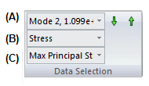
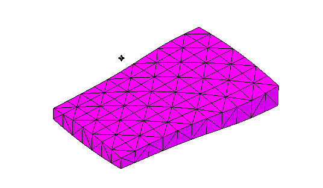
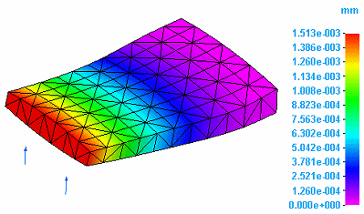
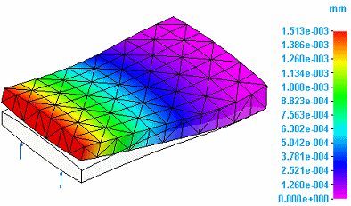
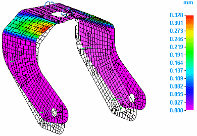
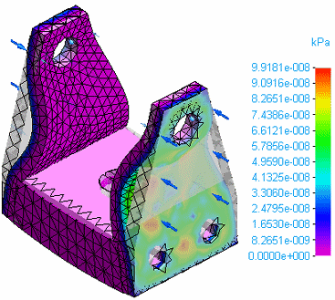
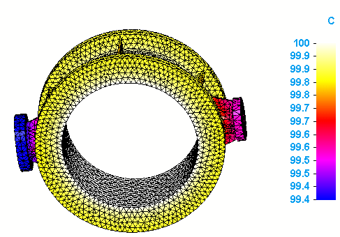
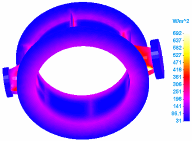
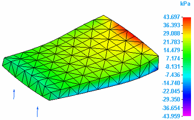

Plotting results
Selecting data to plot
You choose the results data to plot on the model using the lists in the Home tab→Data Selection group.

The combined selections from the three lists—(A) Result Modes, (B) Result Types, and (C) Result Components—determines the output data that is currently displayed, as well as the output data that is available for selection. Changing the selections from these lists automatically updates the Simulation Results environment.
The results data that are available depend upon the study definition.
(A) Result Modes
The Result Modes list (A) is populated for normal modes analysis. It also is populated for linear buckling analysis when the results component selected is Load Case 2 (modal results).
You can review each result mode plot using the up and down arrows located alongside the list.
(B) Result Types
The options in the Result Types list (B) are determined by the boxes that are checked under Results Options for studies. You also can set default options on the Simulation tab, in the Solid Edge Options dialog box.
-
Nodal results include: Displacement plots, applied force plots, constraint plots, beam end reactions, and thermal plots.
-
Elemental results include: Stress plots and strain plots.
(C) Result Components
The component selected in the Result Components list (C) is the data that currently is plotted on the model.
Displaying beam diagrams and cross sections
In a structural frame model with a beam mesh type, you can use the Home tab→Show group→Display Options menu to display the beam diagram and beam cross section in beam result plots.
Beam plots are only available in the Frame environment.
Displaying plotted results from the Simulation pane
In addition to using the Data Selection lists on the ribbon, you can display plotted results from the Simulation pane.
-
In the Simulation pane, you can see all of the results data that is available for the study by expanding the Plots node under the Results collector.
The text color of the plot name indicates the following:
-
Black text=Processed result plots.
-
Blue text=Currently displayed plot.
-
Gray text=Unprocessed result plots.
-
-
You can use the View command on the shortcut menu of a selected plot name to display it in the Simulation Results environment. This also processes previously unprocessed plot results on demand.
-
You also can double-click a result plot name to display the corresponding results.
Select the Do not process all results after solve (faster) check box to limit the number of plots that are processed immediately after solving a study. This option is available in the Create Study (or Modify Study) dialog box and on the Simulation tab in the Solid Edge Options dialog box.
Animate the model deformation
You can animate the model to visualize the response to constraints and applied loads.
To learn how: Animate and save the simulation results.

Displacement plots
Displacement refers to the resultant movement of part geometry as a result of deformation due to applied loads and constraints. You can plot displacement in several ways:
-
You can plot the deformed model by itself.

-
You can plot the deformed model superimposed onto the undeformed model.

-
You can plot rotational deformation. Rotation refers to the resultant twisting of a part due to applied torques or rotational constraints.

For examples, see Displacement component plots.
Applied force plots
Another type of displacement plot is an applied force plot. This shows the effect on part geometry of an applied load, such as a force load.

For examples, see Applied force plots in the help topic, Displacement component plots.
Constraint plots
-
You can plot the effect on part geometry of a force implied by a constraint.

-
You can plot the effect on part geometry of a moment implied by a constraint.

For examples, see Constraint component plots.
Thermal plots
Thermal plots are generated for heat transfer studies and for thermal stress analysis, which in Solid Edge Simulation is evaluated using a thermal coupled study. Thermal stress analysis produces temperature and applied temperature plots, as well as linear static or linear buckling plots.
-
Temperature plots
Temperature plots show the temperature at individual nodes on the primary model.

For examples, see Temperature plots.
-
Applied Temperature plots
Applied temperature plots show the gradient temperature distribution on the deformed and undeformed model, as well as on the primary model.

To learn more, see Applied temperature plots.
-
Heat flux plots
Heat flux plots measure the rate that thermal energy is transferred through a unit area.

Heat flux plots also show the temperature gradient distribution across elements in the model.
For examples, see Heat flux component plots.
Beam reaction plots (Frame environment)
In the Frame environment, you can display beam reaction plots, beam stress plots, and beam diagrams.
-
You can plot the bending moment on each end of the beam members.

-
You can plot the bending shear on each end of the beam members.

-
You can plot the torque on each end of the beam members.

-
You can plot the stresses at each beam cross section stress recovery point, as well as the minimum and maximum combined stresses on each end:

For examples, see Beam reaction component plots, Beam stress component plots, and Beam diagrams.
Stress plots
Stress is the force per unit area of a part.
-
You can plot the stress on a model due to applied loads and constraints.

For examples, see Stress component plots.
Strain plots
-
Strain is the amount of deformation a part experiences in relation to its original size and shape. You can plot the strain on a model due to applied loads and constraints.
-
The external work done on a part in causing it to distort from its unstressed state is transformed into strain energy. You can plot this strain energy on a model.
For examples, see Strain component plots.
How do I
Plot resultsLearn more
Result plots for mixed mesh modelsDisplacement component plots
Stress component plots
Constraint component plots
Strain component plots
Beam properties
Beam reaction component plots
Beam stress component plots
Beam diagrams
Temperature plots
Heat flux component plots
Applied temperature plots